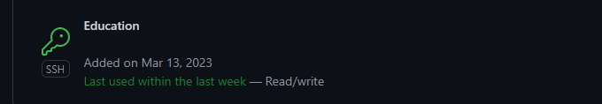
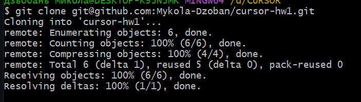

Шпаргалка за командами гіта.
- git config --global user.name blabla - вказуємо ім'я розробника
- git config --global user.email blabal@bla - вказуємо пошту розробника
- git init - створює приховану папку .git, яка містить необхідні файли нашого репозиторію
- git status - перевіряємо статус файлів нашого проекту
- git add - змінює статус наших файлів на 'готові до коміту'
- git commit - зберігаємо наші зміни та готуємо до пушу
- git log - показує список виконаних комітів
- git checkout - використовуємо для переключення між гілками
- git branch - керуємо гілками
- git push - файли з локального репозиторію до віддаленого репозиторію
- git pull - файли з віддаленого репозиторію до локального репозиторію
- git merge - з'єднуємо гілки до головної гілки
- git clone - клонуємо репозиторій
.gitignore - файл, в якому ми прописуємо розширення файлів, які при додаванні файлів проекту до репозиторію, будуть ігноруватись
- git revert - команда дозволяє скасувати будь-які коміти
- git reset - команда для скасування змін
- git rebase - перебазовуємо гілки в одну, тобто накладаємо одну гілку на іншу
- git cherry-pick - дозволяє вибирати коміт з однієї гілки і застосовувати до іншої
- git stash - дозволяє відкласти зміни, щоб застосувати пізніше
Створив SSH і добавив в GitHub

Використав SSH, щоб клонувати репозиторій, попередньо видаливши його
